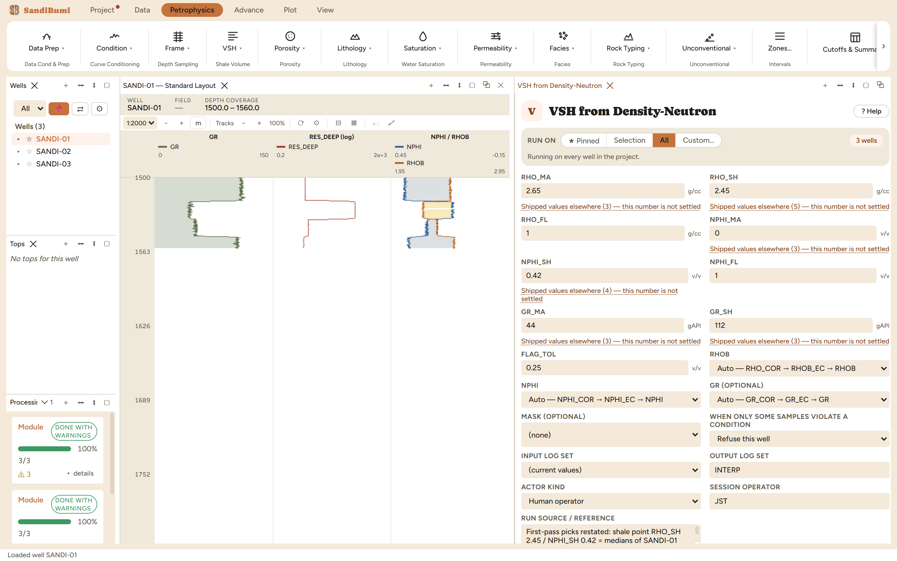

This walkthrough assumes the first-hour setup and the VSH from Gamma Ray chapter. The four mechanics every module run reuses (parameters, custody, "degraded", output sets) are taught there and not repeated here.
The crossplot endpoints only mean something in one matrix convention. The SANDI
wells deliver NPHI in limestone units; run Data Prep → Neutron Matrix Conversion
once (it ran clean on all three wells here) and you get NPHI_SS, the same
log in quartz-sandstone units, where the clean-sand matrix point sits at 0.
Open Petrophysics → VSH → VSH from Density-Neutron and pin the NPHI input to
NPHI_SS. The six endpoints entered for this run, with where each came
from, the same text that went into the run's reference field:
These are picks from this dataset, shown so you can repeat the method; they are not recommended values for anywhere.

On these wells the run reported 0 clean · 3 degraded · 0 failed; SANDI-01's
report says the limited VSH clamped to [0, 1] at 203 of 395 samples. That is the
crossplot being honest: a point that falls off the matrix–shale–fluid triangle (gas,
bad hole, or a shale whose neutron response disagrees with the single NPHI_SH
endpoint) computes an index outside 0–1, and the limited curve clips it while
VSH_DN keeps the raw value.
This is why the module wants GR too: VSH_DN_FLAG goes to 1 wherever
the N-D answer is off-model or diverges from the clay-type-insensitive GR VSH by more
than FLAG_TOL. Read the flag before trusting VSH_DN in a gas leg or an unusual clay:
the neutron shale endpoint is hydroxyl-driven, and one number cannot represent both a
kaolinite and an illite shale.